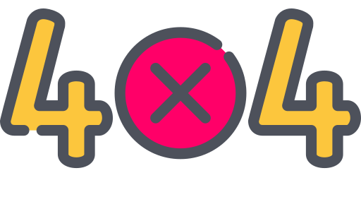

<ion-content class="container">
  
  <!--
    icono obtenido de:
    Icons made by <a href="https://www.flaticon.com/authors/freepik" title="Freepik">Freepik</a> from <a href="https://www.flaticon.com/" title="Flaticon"> www.flaticon.com</a>-->
  
    

  <h1>El usuario no existe</h1>

</ion-content>